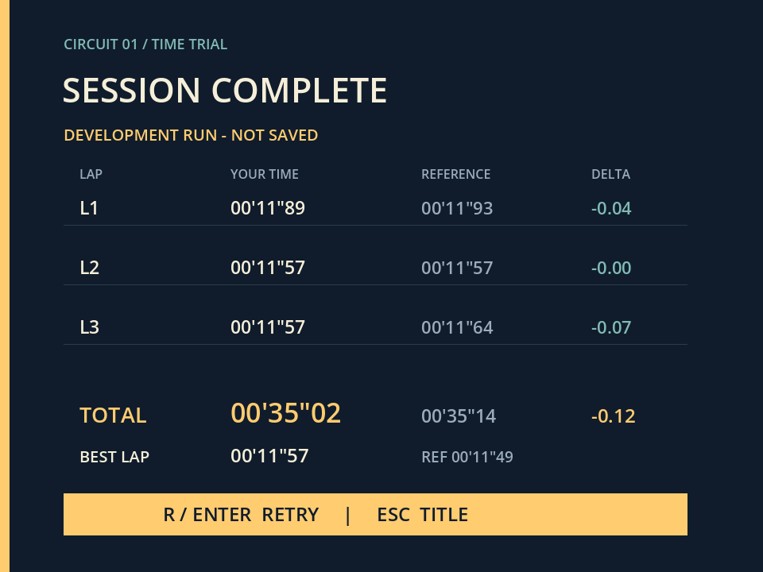

Godot × Codex
接続の補足・制作記録・出典
確認日：2026年10月1日（日本時間）。投影用スライドとは別に、手元で読む資料です。
この資料を作るために、元のゲームやCodexの接続設定は変更していません。以下は説明用です。インストール・登録・MCP操作の再実行は行っていません。
先に押さえる2つの「場所」
| 場所 | 例（自分のPCに合わせて変更） | 意味 |
|---|---|---|
| ゲームの保存先 | C:\Games\my-first-game | project.godot・画像・動きのファイルを入れる箱。CodexとGodotで同じものを使う。 |
| Godot本体 | C:\Tools\Godot\Godot_v4.6.3-stable_win64.exe | Godotを起動する.exe。GODOT_PATHにはこちらを指定する。 |
パスとは、ファイルやフォルダーの場所を表す文字です。エクスプローラーで場所を確認します。プロジェクトフォルダーの親や、Godotを入れたフォルダーを、ゲームの作業対象と取り違えないようにします。
Godotで空のプロジェクトを作る
- GodotのProject Managerを起動。4.6公式英語UIの Create を選ぶ。
- 名前を入力し、Browse から空の保存先を選ぶ。Create Folder を使う場合は作られる子フォルダーまで確認する。
- この授業では描画方式（画面を描く方法）に Compatibility を選び、Create を押す。
- エディターが開き、保存先に
project.godotがあることを確かめる。まだゲームの場面がないため、この時点でF5だけ押しても完成ゲームは動かない。
スライドの設定画面は、Godot 4.6公式手順に基づく再構成図です。実際の画面キャプチャではありません。日本語表示や別バージョンでは名前が異なる場合があります。
Codexの作業場所を選ぶ
Windowsデスクトップ版で、ローカルのフォルダー／プロジェクトを開く機能から、project.godot の入ったフォルダーを選び、その場所のチャットで依頼します。公式資料は現在「ChatGPT desktop app」の中のCodexとして説明されています。画面名の変更に合わせ、固定の日本語ボタン名だけに頼らず、保存先の一致を確かめます。
選択方法が見つからない場合は、ゲームの絶対パスをチャットに渡し、「この場所を作業対象にしてよいか、アクセスできるか確認して」と依頼してください。返答のproject.godotの場所が違う場合は、そのまま制作を進めません。
CLI（文字の命令で操作する版）をすでに使える人は、公式にある codex --cd "C:\Games\my-first-game" でも作業場所を指定できます。デスクトップの授業でCLIの新規導入を必須にはしません。
MCPの設定：今回の方式を理解する
MCPは、AIが外部の道具を呼び出すための共通の仕組みです。今回の Coding-Solo / Godot MCP は外部製です。GodotやOpenAIが標準搭載している専用接続ではありません。
このMCPはローカルのプログラムとして動きます。STDIOとは、CodexとMCPがプログラムの入出力を通じてやり取りする方式です。Node.jsはそれを動かす土台、npmは配布パッケージを入れる道具です。Godotを呼ぶ一部の処理では、MCP自身もGodotの起動命令や同梱スクリプトを使います。
過去の記録と、現在の資料の違い
| 2026年9月29日の記録 | 2026年10月1日に確認した提供元README |
|---|---|
@coding-solo/godot-mcp@0.1.1 を専用フォルダーへインストール。node.exe と build/index.js の絶対パスをCodexに登録。GODOT_PATH を設定。 | Node.js 18以上・npmを要件とし、npx @coding-solo/godot-mcp 方式、GODOT_PATH、ソースからのbuildを案内。Quick StartのClaude用コマンドをCodexへそのまま貼らない。 |
Codexの登録書式はOpenAI公式資料と照合しています。提供元READMEはCodex専用の手順ではないため、下の例は両方の資料を組み合わせた説明です。別PCで動作保証した手順ではありません。
1. 土台とファイルの場所を確認する
操作する場所：WindowsのPowerShell。以下は確認用です。
node --version npm.cmd --version Get-Command node, codex # 自分のGodotの.exeへ置き換える Test-Path -LiteralPath 'C:\Tools\Godot\Godot_v4.6.3-stable_win64.exe' # 自分のゲームの場所へ置き換える Test-Path -LiteralPath 'C:\Games\my-first-game\project.godot'
成功の目印：Node.jsとnpmの版番号、実在するnodeとcodexの場所、2つの True。Node.jsは提供元の最低条件だけで選ばず、サポート中のLTS版を授業環境に用意します。Codexがコマンドとして見つからない場合は、下記の設定ファイル方式を使えます。
2. MCPの起動方式を選ぶ（どちらか1つ）
A：現在のREADMEにあるnpx方式。 npxはパッケージを取得し実行する道具です。初回はネット接続が必要です。下のTOML例はCodex向けに書式を合わせています。
操作する場所：通常は %USERPROFILE%\.codex\config.toml。既存内容を上書きせず、同名の godot 設定があれば内容を確認して編集します。すでに動いている人は登録し直しません。
[mcp_servers.godot] command = 'C:\Program Files\nodejs\npx.cmd' args = ['-y', '@coding-solo/godot-mcp'] [mcp_servers.godot.env] GODOT_PATH = 'C:\Tools\Godot\Godot_v4.6.3-stable_win64.exe'
変える箇所：command は自分のnpx.cmdの実在する場所。GODOT_PATH は自分のGodotの.exe。上のGodotパスは例で、実記録の個人フォルダー名は掲載していません。TOMLの単一引用符はWindowsのバックスラッシュをそのまま書けます。
版を付けないnpx例は、その時点の配布版を使います。授業で版をそろえる場合は、先生が確認したバージョンを末尾に指定します。過去の0.1.1を「今後も必ず使える版」とは扱いません。
B：実記録のローカル配置方式。 当時はnpmで0.1.1を専用フォルダーに配置し、同梱のbuild/index.jsをNode.jsで起動しました。以下は記録の意味を示すもので、そのまま再実行する指示ではありません。
# 過去の記録を個人情報なしで示した形 npm.cmd install --prefix 【MCP専用フォルダー】 --ignore-scripts --no-audit --no-fund --save-exact @coding-solo/godot-mcp@0.1.1 # 登録する値 command = 【node.exeの絶対パス】 args = 【MCP専用フォルダー内のnode_modules/@coding-solo/godot-mcp/build/index.js】 GODOT_PATH = 【Godot本体の.exe】
この方式を選ぶ場合は、現在の配布内容と起動ファイルの存在を確認してください。--ignore-scripts はインストール時のスクリプトを実行しない指定で、どの版でも同じように動くという意味ではありません。
3. Codexへ登録する別の方法
OpenAI公式の現行UI手順は、Settings → MCP servers → Add server。名前を godot、方式をSTDIOにし、上のcommand・args・envに相当する値を入力して保存します。表示項目はアプリの版によって異なります。設定ファイル方式と重複登録しません。
CLIがすでに使える環境では、公式の次の書式で登録できます。【 】はすべて実在する自分のパスへ変更します。サーバー名godotが既存なら、先に内容を確かめます。
codex mcp add godot --env 'GODOT_PATH=【Godotの.exeの絶対パス】' -- '【node.exeの絶対パス】' '【build/index.jsの絶対パス】' # 登録内容を確認 codex mcp list codex mcp get godot
成功の目印：godotの設定があり、起動命令・引数が意図した場所を指す。これは「登録できた」の確認です。
4. 設定を読み込み直す
現行公式UIは保存後に Restart を選ぶ手順です。アプリ内の再読込や再起動の表示に従い、利用可能なMCPツールを確認します。過去チャットは「設定したが、このチャットには追加ツールが未読込」と報告し、Codexの再起動を案内していました。
CodexとMCPの設定を反映する操作と、ゲームファイルをGodotで再読み込みする操作は別です。原因を確認せずにPC全体の再起動や再インストールを繰り返す手順にはしません。
接続の成功を4段階に分ける
| 段階 | 確かめること | ツール／目印 |
|---|---|---|
| 1 登録 | Codexに設定が保存されている | 設定画面、codex mcp list/get |
| 2 応答 | MCPからGodotの版番号が返る | get_godot_version |
| 3 対象 | 自分のゲームの保存先・作品名が合う | get_project_info に対象のprojectPathを渡す |
| 4 操作 | その作品がエディターで開く | launch_editor。保存先と作品名を目視確認 |
これらは提供元の実在するツール名です。AIに利用可能なツールと入力項目を確認させてから呼び出します。設定や文章上の成功だけで、画面の成功まで推定しません。
ゲームを作ったあとは、GodotのエディターでF5を押して動作を確かめます。MCPを使って実行するなら提供元の run_project、実行時の文字出力の取得は get_debug_output、終了は stop_project です。これらを今回の制作で使ったという証拠は確認できていません。
実際の制作記録から確認できたこと
対象：Codexチャット 「Godotとの連携を確認」
チャットID：01a0eb8c-ff79-7c51-8c75-971284ce9a3d
制作日：2026年9月29日。後続のプロジェクト起動依頼も閲覧しました。
| 調査項目 | 記録で確認した事実 |
|---|---|
| Godotの版 | 4.6.3.stable.official.7d41c59c4。Windows、GDScript、Compatibility描画。 |
| MCP | Coding-Solo / godot-mcp。配布パッケージ @coding-solo/godot-mcp 0.1.1。Node.jsからbuild/index.jsを起動。GODOT_PATHを登録。 |
| 応答確認 | PowerShellからNode.jsのMCP SDK確認プログラムを実行。listToolsで14種を取得し、callToolでget_godot_versionを呼び、4.6.3の応答を得た。 |
| 確認の限界 | Codexの通常の会話ツールとしてGodot MCPが読み込まれた証拠ではない。当時の最終返答に「このチャットにはまだ追加ツールが読み込まれていない」とある。 |
| 空プロジェクト | project.godotをファイルとして作成し、Godotの --headless --editor --path … --import --quit で読込確認、Start-Processでエディターを起動。 |
| 制作操作 | ファイル編集ツールでシーン・GDScript・設定・素材を作成／修正。PowerShellからGodot起動、画面なしの自動検証、GPU描画の画像保存を実行。 |
| MCPとの区別 | MCP経由の版番号応答とツール一覧は確認済み。制作・テスト・後続のエディター起動は、閲覧した記録ではファイル編集・コマンド操作。全制作がMCP経由とは説明しない。 |
制作の変化
- 空のMy First Gameを作成。
- 1コース・1台・5周の試作を段階的に実装。
- 左右キーの数値の割り当てミスを修正。従来の動作テストだけでは拾えなかった実キー入力の検証を追加。
- ジャンプ中の曲がりやすさを調整。
- 1プレイを3周へ変更。周回・画面表示・保存する記録をそろえる。
- 左右入力を入れた瞬間のジャンプだけドリフトになるよう再調整。
- 着地後の後輪に煙を追加。
スライドでは学びやすさのため、3周化と操作感の事例を整理して提示しています。時系列は上記のとおり。最新READMEでは次のジャンプはSpaceを離して押し直す方式です。古いチャットの「長押しで繰り返す」は現在の操作説明に採用していません。
実画面の出所


ゲーム画面は既存ファイルをそのまま複製しました。AI生成画像への置換や新規の参考ゲーム素材の取り込みはしていません。スライド14の囲みと番号はHTMLで重ねた注釈です。氏名や個人のフォルダーパスを含むアプリ全画面は掲載していません。
元プロジェクトREADMEは、仮素材による試作であり、音楽・効果音・最終アートが未制作と説明しています。公開済みの完成作品として紹介していません。
卒業制作要件との対応
指定された実施要項を2026年10月1日に直接取得して確認しました。原文は「2026年度案」です。
- 基本はAIを主な制作支援とする個人制作。本人が企画・判断・検証・発表を担う。
- 企画 → アルファ → ベータ → マスター。各段階で教員レビューを受けて改善する。
- アルファは実行データと仕様書、ベータは実行データとデバッグ報告書、マスターはマスター版実行データを提出。
- ストア申請期限：2027年1月12日（火）。制作期間：2027年2月15日（月）まで。
- PCはSteam、スマートフォンはGoogle Play／Apple App Store。東京ゲームダンジョン15への出展もリリースとして認めると記載。
- 要項記載のイベント日：2027年2月20日（土）。出展申込は2026年11月予定、受付開始が発表されたらすぐ申し込む。これは要項の記載の紹介であり、外部主催者の募集開始を確認したという意味ではない。
- 最終提出はプロジェクト一式・ソースコード、マスター版実行データ、プレゼンテーションシート、結果報告書。
- AIサービス名・分かる範囲のモデル名、利用工程と目的、AI使用箇所と自分の修正、検証方法を記録。素材の権利と利用条件、テスト結果、公開状況も報告する。
- 各段階の日付、最終発表会、提出形式などは担当教員から別途案内される。
出典と確認日
全項目の確認日：2026年10月1日。実制作の事実と、インターネットで補った一般手順を分けて示します。
| 分類 | 資料 | 使った内容 |
|---|---|---|
| 実制作・一次記録 | Codexチャット「Godotとの連携を確認」 上記チャットID | ユーザーの依頼、登録コマンド、MCP応答、ファイル編集、起動操作。 |
| 実制作・ローカル資料 | my-first-game / README.md、project.godot、docs/DEVELOPMENT.md、docs/DRIFT_IMPLEMENTATION.md、docs/DRIFT_EFFECT.md、tests/capture.gd、画像 | 操作・3周化・ドリフト条件・未完成項目・画面の取得方法。 |
| 授業の指定要件 | 卒業制作 実施要項 2026年度 | 段階・日程・提出物・公開方法・AI利用記録。 |
| 一般情報・Godot公式 | Godot日本語公式 4.6 Project Manager | 無料のゲームエンジン／新規作成UI。 |
| 一般情報・OpenAI公式 | Codex MCP（現行ページへ転送） 現行MCP資料 | STDIO・config.toml・CLI登録書式・設定UI・Restart。 |
| 一般情報・OpenAI公式 | Windows版（現行ページへ転送） Desktop app Projects and chats | Windows環境・ローカルフォルダー・CLIの作業場所。利用料金の数値は掲載しない。 |
| 外部製MCPの提供元 | Coding-Solo/godot-mcp README 確認したREADME本文 | 必要環境・npx・GODOT_PATH・実在するツール・仕組み。 |
| 授業用に作成 | 役割図・接続図・Godot設定画面の再構成・プロンプト例・最小課題 | 記録と公式手順をやさしい言葉へ整理。実画面や実際の発言とは区別。 |
授業で使うとき
index.html をChromeやEdgeで開きます。フォルダー内のCSS・JavaScript・assetsを一緒に保管してください。画像はローカル同梱で、スライド本体はネット接続なしでも表示できます。出典リンクはネット接続が必要です。
← →、PageUp／PageDown、Spaceで移動。先頭の←で最後へ、最後の→で先頭へ戻ります。Homeで先頭、Endで最後。全画面ボタンまたはFで全画面、Escで解除。画面は1920×1080を基準に縦横比を保って縮小します。
プロンプト集はテキストとしてコピーできます。本文の「コピー」ボタンも使えます。学生は画像を自分のゲームフォルダーへ置き、画像名と保存先を依頼文に入れてください。